From the xy-plane to the sphere
We first parameterize the line that passes through the north pole and a generic point in the xy-plane.
| > |
Line:= expand( t*[0,0,1] + (1-t)*[x,y,0] ); |
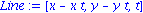
Now we find the values of t at which this line intersects the Riemann sphere (here, the unit sphere).
| > |
solve( Line[1]^2 + Line[2]^2 + Line[3]^2 =1, t ); |
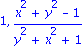
The first of these just recovers the north pole; the other is the projection of the planar point onto the sphere. Here are the coordinates:
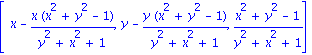
![[2*x/(y^2+x^2+1), 2*y/(y^2+x^2+1), (x^2+y^2-1)/(y^2+x^2+1)]](images/RiemannSphere_4.gif)
We'll save this as a function for future use.
| > |
XY2RS:= unapply(%,[x,y]); |
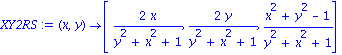
From the sphere to the xy-plane
Now we express the line through the north pole and a generic point on the sphere (which we just call [x,y,z]).
| > |
Line:= expand( t*[0,0,1] + (1-t)*[x,y,z] ); |
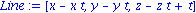
Find where this intersects the xy plane.
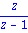
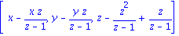
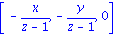
We save this one too.
| > |
RS2XY:= (x,y,z) -> [ x/(1-z), y/(1-z)]; |
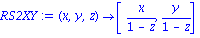
Graphics of the projection
Here we look visually at the stereographic projection process for several points.
| > |
with(plots): with(plottools): |
Warning, the name arrow has been redefined
| > |
setoptions3d(axes=NONE,labels=["x","y","z"],scaling=CONSTRAINED,transparency=0.25,view=[-2..2,-2..2,-2..2]); |
| > |
S:= sphere([0,0,0],1,style=PATCHNOGRID,shading=XYZ):
P:=polygon([[-2,-2,0],[-2,2,0],[2,2,0],[2,-2,0]],color=gray): |
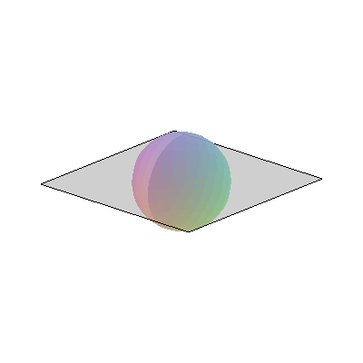
| > |
Points:= pointplot3d([[1.2,-1.5,0],[-0.5,0,0],[0,1,0]], color=red,symbol=CIRCLE,symbolsize=18): |
One end of the projection line is at the north pole; the other may be on the plane or on the lower half of the sphere.
| > |
ProjLine1:= (x,y) -> line( [0,0,1],[x,y,0], color=blue, thickness=2): |
| > |
ProjLine2:= (x,y) -> line( [0,0,1],XY2RS(x,y), color=blue, thickness=2): |
| > |
display({S,P,Points,ProjLine1(1.2,-1.5),ProjLine2(-0.5,0),ProjLine1(0,1)},transparency=0.2); |
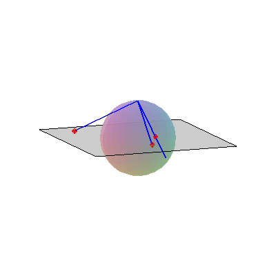
To really understand a plot like this, you need to do it inside Maple so that you can change the point of view.
Circles and lines
One of the most interesting facts about the stereographic projection is that circles and lines in the plane map to circles on the sphere. The proof of that fact is not difficult, but here we settle for a graphical demo. Again, it's much better "live" in Maple.
Here is a function for drawing a circle in the plane and its twin on the surface of the sphere.
| > |
ShowCircles:= (c,r) -> display( S,P,spacecurve( [c[1]+r*cos(t),c[2]+r*sin(t),0],t=0..2*Pi,color=blue),
spacecurve(XY2RS(c[1]+r*cos(t),c[2]+r*sin(t)),t=0..2*Pi,color=red) ): |
| > |
ShowCircles( [1.5,0], 0.5 ); |
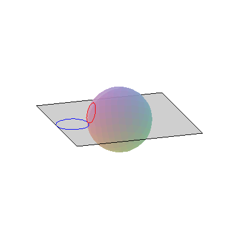
A show of a growing circle in the plane:
| > |
animate( ShowCircles, [ [0,0], r ], r=0.1..2 ); |
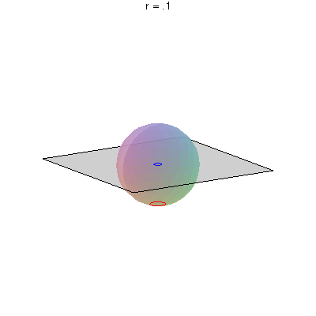
Here is a function to show a line and its twin.
| > |
ShowLines:= (p,v) -> display( S,P,spacecurve([p[1]+s*v[1],p[2]+s*v[2],0],s=-5..5,color=blue),
spacecurve(XY2RS(p[1]+s*v[1],p[2]+s*v[2]),s=-80..80,color=red,numpoints=1800) ): |
| > |
ShowLines( [-0.8,0], [-1,2] ); |
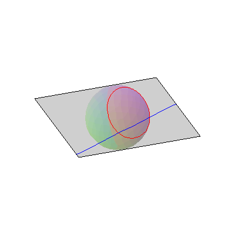
Animation of longitude circles:
| > |
animate( ShowLines,[ [0,0],[cos(t),sin(t)] ], t=0..2*Pi ); |
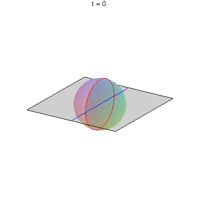
A "sweep" of parallel lines:
| > |
animate( ShowLines,[ [t,0],[0,1] ], t=-2..2 ); |
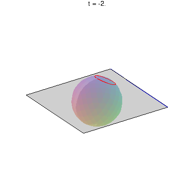